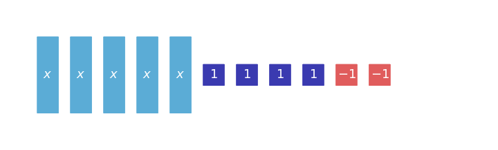

3.
The rectangle model represents a product. Fill in the missing cells and write the product as a sum.

This practice set strengthens the core ideas for this section while keeping prerequisite skills active. Focus on showing how each representation or structure supports your answer.
In $3(x+4)$, name the grouped expression.
Which terms are like terms in $7x+2+5x+9$?
The rectangle model represents a product. Fill in the missing cells and write the product as a sum.
Write an expression for the total cost: $5$ notebooks at $n$ dollars each and $3$ folders at $2$ dollars each. Then simplify if possible.
Translate the algebra tiles model into the represented expression.

Rewrite $4x+12$ in two forms: as a sum and as a product using a common factor.
A gym charges a fixed start amount of $8$ points plus $3$ points per challenge. A student earns $35$ points total. Write and solve an equation for the number of challenges.
Solve $\frac{x}{8}=\frac{3}{4}$ and check your result in the original proportion.
An equation has solution $x=-2$. Create a two-step equation with that solution, then verify it by substitution.
Without completing exact multiplication first, estimate the value of $7.8(-0.52)$. Explain why the exact answer should be between $-5$ and $-3$ or why that interval is not reasonable.
Find the total change $-1\frac{1}{2}+\frac{3}{4}-2.25$ using two methods: fraction form and decimal form. Explain how the methods confirm each other.
A team solves a context with $2x+5=17$ but reports only $x=6$. Add the missing interpretation, unit, and substitution check so the answer is complete.
Which table shows the rule $y={2}x$?
| Choice | $x$ values | $y$ values |
|---|---|---|
| A | 1, 2, 3 | 3, 4, 5 |
| B | 1, 2, 3 | 2, 4, 6 |
| C | 1, 2, 3 | 1, 4, 9 |
In the verbal rule “subtract ${3}$, then double,” which operation happens first?
The rule is “start at ${12}$ and subtract ${2}$ for each input step.” Build a table for inputs ${0}$ through ${6}$ and identify when the output reaches ${0}$.
Explain why the equation $y={7}$ is linear even though there is no visible $x$-term. Include a table and a graph description in your explanation.